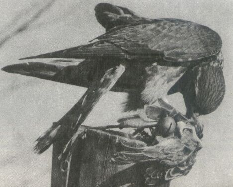

SOKOLNICTWO
Sokoły reprezentują najdoskonalszą formę ptaka drapieżnego i w wielu cechach charakterystycznych dla ptaków drapieżnych osiągnęły szczyt rozwoju. Pod względem siły mięśni, szybkości lotu i bystrości wzroku nie dorównuje im żaden inny gatunek. Nie tylko budowa silnych i szablowatych lotek przyczynia się do rozwinięcia niebywale szybkiego lotu, lecz również budowa ciała w kształcie kropli o idealnie opływowych kształtach umożliwia błyskawiczny atak. Sokoły były i obecnie znów ten nurt powraca, że są uważane za najpiękniejszą ozdobę życia myśliwskiego. W polowaniach sokolniczych używa się najczęściej sokołów szlachetnych, do których zalicza się przedewszystkim: białozora, sokoła wędrownego zwanego dziwokiem, raroga, drzemlika, kobuza, rzadziej pustułkę.
SOKÓŁ NORWESKI zwany białozorem był najbardziej cenionym ptakiem w sokolnictwie. Właściwą ojczyzną białozora są krainy dalekiej pólnocy, stamtąd pochodzą osobniki największe i prawie zupełnie białe. Natomiast formy spotykane w rejonach południowych, na przykład w górach Ałtaju czy północnej Afryki, są przeważnie mniejsze i znaczniej intensywnie nakrapiane. Ciężar jego dochodzi do 2,5 kg, a długość do 65 cm. Dawniej ptak ten był chwytany w Polsce głównie podczas przelotów na Litwe. Obecnie pojawiają się w Polsce nader rzadko. Gnieździ się w nadmorskich urwiskach skalnych. Łowi przeważnie ptactwo wodne oraz pardwy w tundrze. Ułożony do celów łowieckich potrafi z dużą łatwościa zabić duże ptaki i właśnie z tego względu i dużej siły jest tak ceniony i poszukiwany przez sokolników.
RARÓG Jego zalety myśliwskie są nie mniejsze niż białozora norweskiego, a nawt większe, raróg bowiem przewyższał białozora wszechstronnością. Jest ponadto równie silny i chociaż mniejszy, z tą samą sprawnością uderza na ptactwo jak i na dużą zwierzynę naziemną. Raróg jest ptakiem lęgowym w Azji Zachodniej oraz oraz Europie Wschodniej. Wśród wielu nazw owego ptaka są i takie, które określają dokładnie jego związek z naszym krajem - raróg Polak, sokół podolski i sokłół polski. Rarogiem można polować cały rok, wyłączając okres pierzenia, znosi on bowiem pory zimne jak i gorące. Należy go jednak, zwłaszcza w okresie pierzenia, dobrze karmić ptasim mięsem i nie polować w dni słotne i mgliste. Za najlepszą porę do łowów z tym sokołem uważa się okres od żniw do późnej jesieni, a także zimowy, kiedy można upolować zajęce, kuropatwy i jarząbki. Jest on podobnie jak jastrząb odważny, aż do zuchwałości, atakuje nawet tak dużą zwierzynę jak sarny i antylopy. Proporcjami ciała różnia się dość znacznie od białozora, posiada skrzydla krótsze i porusza nimi wolniej, ogon ma znacznie dłuższy, a w locie częściej szybuje. W sokolnictwie zajmuje miejsce między sokołem wędrowny, a jastrzębiem, którego przypomina w sposobie chwytania zdobyczy.
SOKÓŁ WĘDROWNY wobec swojej niezwykłej sprawności był i jest najbardziej ulubionym ptakiem sokolników. Chociaż znacznie mniejszy od powyżej opisanych sokołów, bo dochodzący do wagi zaledwie 1,2 kg, to dzięki odpowiedniej tresurze nabywają dużej odwagi. Rzucają się na znacznie większe od siebie ptaki, a nawet dają się wyuczyć i wyspecjalizować do chwytania naziemnej zwierzyny, np. królików czy zajęcy - chociaż żyjący na wolności jest typowym ornitofagiem. Jest on tak silny, że z łatwością zanosi swym młodym do gniazda ptaki stosunkowo cięzkie, jak wrony i kuropatwy. Sokolnicy nazwali go szlachetnym. Obserwowanie jego lotu do ataku, błyskawicznego, niedostrzegalnego prawie momentu zadawania szponami ciosu swej ofiarze sprawia duże wrażenie. Grecy i Rzymianie nie znający łowów z ptakami drapieżnymi widzieli w sokole wędrownym symbol siły, odwagi i zręczności.
DRZEMLIK
Gnieździ się głównie na Półwyspie Skandynawskim oraz w Islandii. Ten mały sokolik, którego średnia waga wynosi około 200 g, zjawia się w naszym kraju w marcu i kwietniu. W locie i podczas łowów przypomina krogulca. Przewżnie chwyta on małe ptaszki , wróble, skowronki, szpaki, drozdy, kuliki i przepiórki. W sokolnictwie jest wysoko ceniony, ponieważ daje się również ułożyć do chwytania ptaków znacznie przeważszających go rozmiarami. Potrafi uderzyć na gołębie i kuropatwy, a w gromadzie , bije nawet cietrzewie, głuszce i dzikie gęsi. Mimo swych małych rozmiarów jest bowiem nadzwyczaj śmiały i odważny. Na swe ofiary uderza z ogromną szybkością, unikając zasadzek i skrytego podlatywania, bijąc je tylko w otwartym ataku. Niewolę drzemliki znoszą niełatwo, dlatego należy poświęcać im wiele starań i zapewniać troskliwą opiekę. Zdarza się jednak, iż mimo wszelkich starań trudno jest niektóre utrzymać na dłużej.
KOBUZ zwany kobcem lub sokołem leśnym, wymagał nie mniej troski, jak drzemlik, a nawet ogrzewanego pomnieszczenia zimą. Drapieżnik ten, zaliczany do sokolików, jest u nas ptakiem lęgowym. Z zimowisk w Afryce przylatuje do nas w kwietniu, a czasami już w marcu i bawi do września i października. Wzrostem i wagą przewyższa nieco drzemlika, lecz nie dorównuje mu odwagą i chęcią atakowania większej zdobyczy. Daje się ułożyć do łowów na małe ptaszki, przedewszystkim skowronki, szpaki, drozdy czasem przepiórki. Jest on bardzo kapryśny, nietrwały w atakowaniu i leniwy. Często też, gdy nie udał mu się dosiad, potrafi rezygnować z pościgu, siadając na najbliższej gałęzi, z której trudno jest go przywołać spowrotem na rękawice. Z tego powodu sokolnicy rzadko decydują się na układanie kobuzów.
PUSTUŁKA wzrostem zbliżona jest do kobuza. Jednak mimo tego, że chętnie daje się ułożyć, nie posiada odpowiedniej odwagi i siły. Choć niektórzy zaprzeczają temu, twierdząc, że można go ułożyć do polowania na małe ptaszki.
Ptaki drapieżne stosowane do celów łowieckich
Sokoły reprezentują najdoskonalszą formę ptaka drapieżnego i w wielu cechach charakterystycznych dla ptaków drapieżnych osiągnęły szczyt rozwoju. Pod względem siły mięśni, szybkości lotu i bystrości wzroku nie dorównuje im żaden inny gatunek. Nie tylko budowa silnych i szablowatych lotek przyczynia się do rozwinięcia niebywale szybkiego lotu, lecz również budowa ciała w kształcie kropli o idealnie opływowych kształtach umożliwia błyskawiczny atak. Sokoły były i obecnie znów ten nurt powraca, że są uważane za najpiękniejszą ozdobę życia myśliwskiego. W polowaniach sokolniczych używa się najczęściej sokołów szlachetnych, do których zalicza się przedewszystkim: białozora, sokoła wędrownego zwanego dziwokiem, raroga, drzemlika, kobuza, rzadziej pustułkę.
SOKÓŁ NORWESKI zwany białozorem był najbardziej cenionym ptakiem w sokolnictwie. Właściwą ojczyzną białozora są krainy dalekiej pólnocy, stamtąd pochodzą osobniki największe i prawie zupełnie białe. Natomiast formy spotykane w rejonach południowych, na przykład w górach Ałtaju czy północnej Afryki, są przeważnie mniejsze i znaczniej intensywnie nakrapiane. Ciężar jego dochodzi do 2,5 kg, a długość do 65 cm. Dawniej ptak ten był chwytany w Polsce głównie podczas przelotów na Litwe. Obecnie pojawiają się w Polsce nader rzadko. Gnieździ się w nadmorskich urwiskach skalnych. Łowi przeważnie ptactwo wodne oraz pardwy w tundrze. Ułożony do celów łowieckich potrafi z dużą łatwościa zabić duże ptaki i właśnie z tego względu i dużej siły jest tak ceniony i poszukiwany przez sokolników.
RARÓG Jego zalety myśliwskie są nie mniejsze niż białozora norweskiego, a nawt większe, raróg bowiem przewyższał białozora wszechstronnością. Jest ponadto równie silny i chociaż mniejszy, z tą samą sprawnością uderza na ptactwo jak i na dużą zwierzynę naziemną. Raróg jest ptakiem lęgowym w Azji Zachodniej oraz oraz Europie Wschodniej. Wśród wielu nazw owego ptaka są i takie, które określają dokładnie jego związek z naszym krajem - raróg Polak, sokół podolski i sokłół polski. Rarogiem można polować cały rok, wyłączając okres pierzenia, znosi on bowiem pory zimne jak i gorące. Należy go jednak, zwłaszcza w okresie pierzenia, dobrze karmić ptasim mięsem i nie polować w dni słotne i mgliste. Za najlepszą porę do łowów z tym sokołem uważa się okres od żniw do późnej jesieni, a także zimowy, kiedy można upolować zajęce, kuropatwy i jarząbki. Jest on podobnie jak jastrząb odważny, aż do zuchwałości, atakuje nawet tak dużą zwierzynę jak sarny i antylopy. Proporcjami ciała różnia się dość znacznie od białozora, posiada skrzydla krótsze i porusza nimi wolniej, ogon ma znacznie dłuższy, a w locie częściej szybuje. W sokolnictwie zajmuje miejsce między sokołem wędrowny, a jastrzębiem, którego przypomina w sposobie chwytania zdobyczy.
SOKÓŁ WĘDROWNY wobec swojej niezwykłej sprawności był i jest najbardziej ulubionym ptakiem sokolników. Chociaż znacznie mniejszy od powyżej opisanych sokołów, bo dochodzący do wagi zaledwie 1,2 kg, to dzięki odpowiedniej tresurze nabywają dużej odwagi. Rzucają się na znacznie większe od siebie ptaki, a nawet dają się wyuczyć i wyspecjalizować do chwytania naziemnej zwierzyny, np. królików czy zajęcy - chociaż żyjący na wolności jest typowym ornitofagiem. Jest on tak silny, że z łatwością zanosi swym młodym do gniazda ptaki stosunkowo cięzkie, jak wrony i kuropatwy. Sokolnicy nazwali go szlachetnym. Obserwowanie jego lotu do ataku, błyskawicznego, niedostrzegalnego prawie momentu zadawania szponami ciosu swej ofiarze sprawia duże wrażenie. Grecy i Rzymianie nie znający łowów z ptakami drapieżnymi widzieli w sokole wędrownym symbol siły, odwagi i zręczności.
DRZEMLIK

KOBUZ zwany kobcem lub sokołem leśnym, wymagał nie mniej troski, jak drzemlik, a nawet ogrzewanego pomnieszczenia zimą. Drapieżnik ten, zaliczany do sokolików, jest u nas ptakiem lęgowym. Z zimowisk w Afryce przylatuje do nas w kwietniu, a czasami już w marcu i bawi do września i października. Wzrostem i wagą przewyższa nieco drzemlika, lecz nie dorównuje mu odwagą i chęcią atakowania większej zdobyczy. Daje się ułożyć do łowów na małe ptaszki, przedewszystkim skowronki, szpaki, drozdy czasem przepiórki. Jest on bardzo kapryśny, nietrwały w atakowaniu i leniwy. Często też, gdy nie udał mu się dosiad, potrafi rezygnować z pościgu, siadając na najbliższej gałęzi, z której trudno jest go przywołać spowrotem na rękawice. Z tego powodu sokolnicy rzadko decydują się na układanie kobuzów.
PUSTUŁKA wzrostem zbliżona jest do kobuza. Jednak mimo tego, że chętnie daje się ułożyć, nie posiada odpowiedniej odwagi i siły. Choć niektórzy zaprzeczają temu, twierdząc, że można go ułożyć do polowania na małe ptaszki.